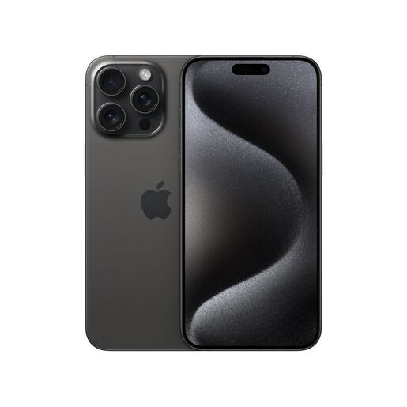

Primeiro iPhone
O primeiro iPhone chegou ao mercado em 2007 com a promessa de ser um aparelho “revolucionário”, como sugeriu Steve Jobs em sua apresentação. Como prometido, o modelo popularizou a tela sensível ao toque e emplacou tendências no ramo de celulares.
Mesmo com uma das maiores telas do mercado, ele contava com singelas 3,5 polegadas, bem menor em comparação com as 6,7 polegadas do atual iPhone 15 Pro Max. A popularidade do primogênito se consolidou após a empresa alcançar a marca de 1 milhão de dispositivos vendidos após dois meses.
Confira o vídeo de apresentação do primeiro iPhone
Atualmente o dispositivo móvel mais atual da apple é o iPhone 15 Pro Max
